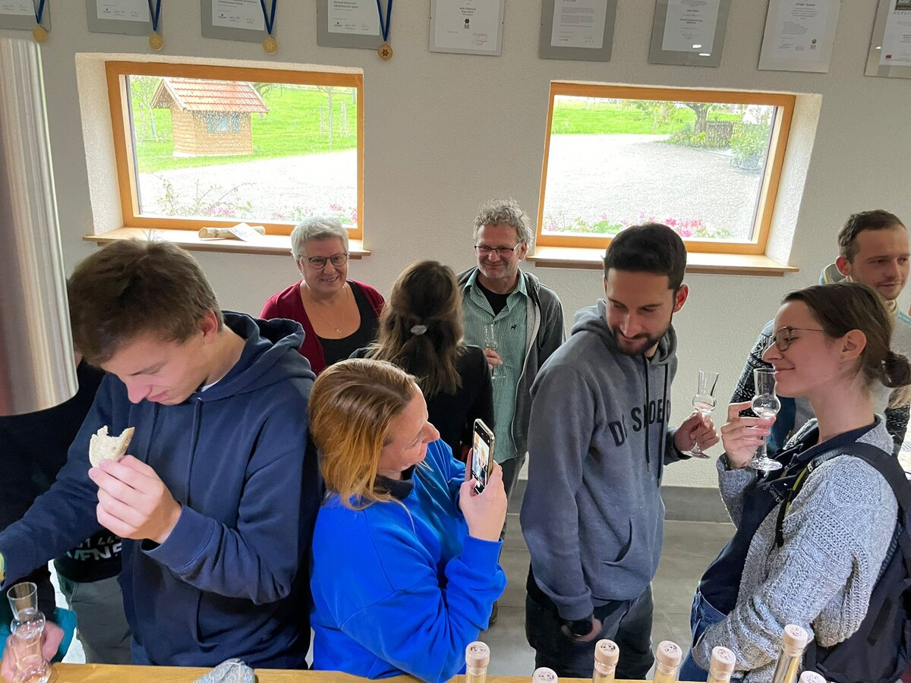
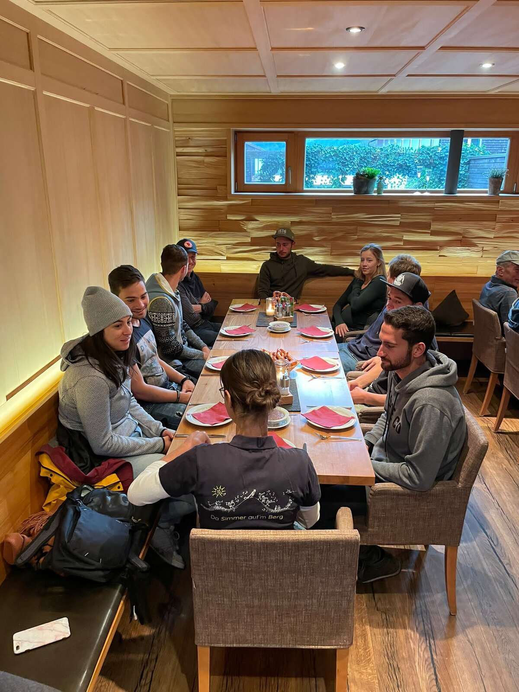
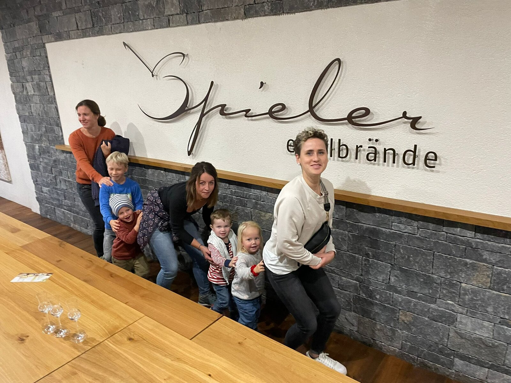

Ab welchem Alter?
Der Einstieg ist ab ca. 7 Jahren möglich – je nach Instrument und Körpergröße. Für die Kleinsten bieten wir musikalische Früherziehung in Kooperation mit der Musikschule.
Nachwuchs
Musikalische Ausbildung, Gemeinschaft und erste Auftritte – von Anfang an dabei.

Unsere Jungmusikanten
Die Ausbildung bei der Musikkapelle Simmerberg beginnt im Kindesalter – bei uns finden junge Menschen eine starke Gemeinschaft und lernen ihr Instrument mit qualifizierten Ausbildern.
Jetzt anmeldenDer Einstieg ist ab ca. 7 Jahren möglich – je nach Instrument und Körpergröße. Für die Kleinsten bieten wir musikalische Früherziehung in Kooperation mit der Musikschule.
Die Ausbildung wird von unserem Förderverein großzügig unterstützt. Nach Absprache übernehmen wir einen Großteil der Ausbildungskosten.
Zum FördervereinGemeinschaft

Gemeinsame Ausflüge
Musikalische Aktivitäten